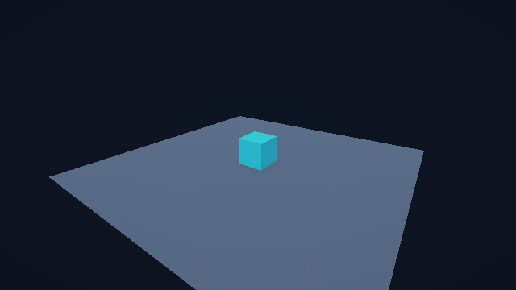

旧版已归档，OEvent 已正式接入
EventScope 已被全局 OEvent 替换。沿用 [OEvent]、四类 MethodObject 与 OEventManager.Instance；Boost Demo 经事件处理器刷新。
技术验证通过 · 人工反馈尚未提交。该页可直接从本地文件打开，内容及反馈导出均无需服务器。
如何审查
- 按编号对照迁移要求、实际差异和测试证据。
- 每个要点选择“是 / 否”，再选择本项“通过 / 修改意见”。未选择会保留为“未判断”。
- 点击末尾“导出结论文本”，将文本回复到原任务。页面不会自动发送、修改仓库或代替你的确认。
结论用途：通过表示你认可对应交付；修改意见用于后续返修。测试通过不自动填入人工通过。此页是交付检查入口，不是提交推送的额外授权关口。
01旧版本保留与来源
旧分支 codex/legacy-pre-oevent-20261021 已推送，远端哈希为 3dcaaa374518fe3543472c1e900d6260623fbbe8。新版沿用 codex/unity-6000.3.23f1-urp3d，未合并 main。
来源提交为 066c1e442ee2e5a93f399ecf74f1b54d9c29447c；五个原始核心文件的 SHA-256 已记录并复核未变。原工程保留原状。
旧版 GitHub 提交（联网可查看） · 本地事实来源：source-manifest.json
02OEvent 替换与固定分发语义
| 接入前 | 0.3.0 结果 | 核对重点 |
|---|---|---|
| EventScope / 委托订阅 token | 全局 OEvent + 四类处理器 | 无并行旧事件系统；Entity.Track 保留 |
| 按作用域发布 / 唯一查询 | 四种 Broadcast 入口 | 低数值优先、同优先级稳定顺序 |
| 原版 OEvent 返回值索引问题 | 事件类型 + 结果类型 + 模式分开 | 首个正常结果包括 null；普通异常记录并继续，取消传播 |
| 旧单例与 Unity 日志依赖 | 纯 C# 核心 + ILogSink | .NET 与 Unity 复用代码 |
广播期间新增不会进入当前广播；退订立即生效。嵌套广播可以看到新注册项。相同具体类型只注册一个对象，错误实例不能代替原实例退订。无返回异步处理器逐个等待，异常传播。
查看实际代码差异（框架、Unity 适配、Demo、测试和包版本）
以下内容由相对旧基线的 Git 差异生成，包含新增代码；测试 XML 和文档改动未放入此代码视图。
diff --git a/DevProject/Assets/ASCLDemo/Runtime/Urp3DDemo.cs b/DevProject/Assets/ASCLDemo/Runtime/Urp3DDemo.cs
index 8479618..f845ac1 100644
--- a/DevProject/Assets/ASCLDemo/Runtime/Urp3DDemo.cs
+++ b/DevProject/Assets/ASCLDemo/Runtime/Urp3DDemo.cs
@@ -6,6 +6,8 @@ using ASCL.Gameplay.Numeric;
using ASCL.Gameplay.Skills;
using ASCL.Unity;
using Cysharp.Threading.Tasks;
+using OEvent;
+using OEvent.Module;
using UnityEngine;
using UIText = UnityEngine.UI.Text;
@@ -23,6 +25,7 @@ namespace ASCL.DevProject {
private SkillDefinition _boost;
public bool IsReady => _target != null;
+ public int EventRefreshCount { get; private set; }
public float Power => IsReady ? (float)_target.Numeric.GetValue(_powerKey) : 0;
public int BuffStacks => IsReady && _target.Buffs.Active.Count > 0
? _target.Buffs.Active[0].Stacks : 0;
@@ -44,7 +47,7 @@ namespace ASCL.DevProject {
_boost = new SkillDefinition("urp-demo.boost", 1,
new IActionEffect[] { new ApplyBuffEffect(buff) });
_skills = new SkillRunner(new ActionPipeline());
- RefreshView();
+ PublishPowerChanged();
}
private void Update() {
@@ -57,10 +60,17 @@ namespace ASCL.DevProject {
if (!IsReady) throw new InvalidOperationException("The demo has not started yet.");
ActionResult result = await _skills.CastAsync(_boost, _source, _target,
this.GetCancellationTokenOnDestroy());
- RefreshView();
+ PublishPowerChanged();
return result;
}
+ private void PublishPowerChanged() => OEventManager.Instance.BroadcastEvent(new DemoPowerChanged(this));
+
+ internal void RefreshFromEvent() {
+ EventRefreshCount++;
+ RefreshView();
+ }
+
private void RefreshView() {
float height = Power / 10;
powerCube.localScale = new Vector3(1, height, 1);
@@ -73,4 +83,17 @@ namespace ASCL.DevProject {
_targetEntity?.Dispose();
}
}
+
+ public readonly struct DemoPowerChanged {
+ public readonly Urp3DDemo Target;
+ public DemoPowerChanged(Urp3DDemo target) => Target = target;
+ }
+
+ [OEvent]
+ public sealed class DemoPowerChangedHandler : OEventNoReturnMethodObject<DemoPowerChanged> {
+ // No stored scene references: the destination belongs to this broadcast only.
+ public override void Run(DemoPowerChanged message) {
+ if (message.Target != null && message.Target.IsReady) message.Target.RefreshFromEvent();
+ }
+ }
}
diff --git a/DevProject/Assets/ASCLDemo/Tests/Editor/ASCL.DevProject.Editor.Tests.asmdef b/DevProject/Assets/ASCLDemo/Tests/Editor/ASCL.DevProject.Editor.Tests.asmdef
index a121ed5..255d2db 100644
--- a/DevProject/Assets/ASCLDemo/Tests/Editor/ASCL.DevProject.Editor.Tests.asmdef
+++ b/DevProject/Assets/ASCLDemo/Tests/Editor/ASCL.DevProject.Editor.Tests.asmdef
@@ -1,7 +1,7 @@
{
"name": "ASCL.DevProject.Editor.Tests",
"rootNamespace": "ASCL.DevProject.Tests",
- "references": ["ASCL.DevProject", "ASCL.DevProject.Editor", "ASCL.Unity", "Unity.RenderPipelines.Core.Runtime", "Unity.RenderPipelines.Universal.Runtime"],
+ "references": ["ASCL.DevProject", "ASCL.DevProject.Editor", "ASCL.Core", "ASCL.Unity", "Unity.RenderPipelines.Core.Runtime", "Unity.RenderPipelines.Universal.Runtime"],
"optionalUnityReferences": ["TestAssemblies"],
"includePlatforms": ["Editor"],
"autoReferenced": false
diff --git a/DevProject/Assets/ASCLDemo/Tests/PlayMode/Urp3DPlayModeTests.cs b/DevProject/Assets/ASCLDemo/Tests/PlayMode/Urp3DPlayModeTests.cs
index df35137..6eddc3e 100644
--- a/DevProject/Assets/ASCLDemo/Tests/PlayMode/Urp3DPlayModeTests.cs
+++ b/DevProject/Assets/ASCLDemo/Tests/PlayMode/Urp3DPlayModeTests.cs
@@ -4,6 +4,7 @@ using ASCL.Entities;
using ASCL.Unity;
using Cysharp.Threading.Tasks;
using NUnit.Framework;
+using OEvent.Module;
using UnityEngine;
using UnityEngine.Rendering;
using UnityEngine.Rendering.Universal;
@@ -43,6 +44,8 @@ namespace ASCL.DevProject.Tests {
Assert.That(demo.IsReady, Is.True);
Assert.That(driver.World.Count, Is.EqualTo(2));
Assert.That(demo.Power, Is.EqualTo(10));
+ Assert.That(OEventManager.Instance.IsInitialized, Is.True);
+ Assert.That(demo.EventRefreshCount, Is.EqualTo(1), "Initial presentation must pass through OEvent.");
driver.Systems.Register(new ProbeSystem());
var probe = driver.World.Create<TickProbe>();
@@ -55,11 +58,16 @@ namespace ASCL.DevProject.Tests {
GameObject.Find("Boost").GetComponent<Button>().onClick.Invoke();
yield return null;
Assert.That(demo.Power, Is.EqualTo(12));
+ Assert.That(demo.EventRefreshCount, Is.EqualTo(2));
for (int i = 0; i < 3; i++) {
yield return demo.BoostAsync().ToCoroutine(result => Assert.That(result.Succeeded, Is.True));
+ Assert.That(demo.Power, Is.EqualTo(i == 0 ? 14 : 16));
+ Assert.That(demo.BuffStacks, Is.EqualTo(i == 0 ? 2 : 3));
+ Assert.That(demo.EventRefreshCount, Is.EqualTo(i + 3));
}
Assert.That(demo.Power, Is.EqualTo(16));
Assert.That(demo.BuffStacks, Is.EqualTo(3));
+ Assert.That(demo.EventRefreshCount, Is.EqualTo(5), "Each completed skill must refresh through exactly one handler.");
var cube = GameObject.Find("Power Cube").transform;
Assert.That(cube.localScale.y, Is.EqualTo(1.6f).Within(0.001f));
Assert.That(cube.localPosition.y, Is.EqualTo(0.8f).Within(0.001f));
@@ -70,6 +78,23 @@ namespace ASCL.DevProject.Tests {
Assert.That(driver.World.Count, Is.Zero, "Unloading presentation must release its entities.");
}
+ [UnityTest]
+ public IEnumerator SceneReloadKeepsGlobalRegistrationAndIgnoresDestroyedTarget() {
+ var oldDemo = Object.FindFirstObjectByType<Urp3DDemo>();
+ int count = OEventManager.Instance.RegisteredHandlerCount;
+ yield return SceneManager.LoadSceneAsync("ASCL_URP3D", LoadSceneMode.Single);
+ yield return null;
+ Assert.That(oldDemo == null, Is.True);
+ var next = Object.FindFirstObjectByType<Urp3DDemo>();
+ Assert.That(next.EventRefreshCount, Is.EqualTo(1));
+ Assert.That(OEventManager.Instance.RegisteredHandlerCount, Is.EqualTo(count));
+ OEventManager.Instance.BroadcastEvent(new DemoPowerChanged(oldDemo));
+ Assert.That(next.EventRefreshCount, Is.EqualTo(1), "An old scene's target must never refresh the new scene.");
+ yield return next.BoostAsync().ToCoroutine();
+ Assert.That(next.Power, Is.EqualTo(12));
+ Assert.That(next.EventRefreshCount, Is.EqualTo(2));
+ }
+
[UnityTest]
public IEnumerator BothQualityProfilesRenderVisibleGeometryWithoutErrorShaders() {
Assert.That(SystemInfo.graphicsDeviceType, Is.Not.EqualTo(GraphicsDeviceType.Null),
diff --git a/DotNet/ASCL.Tests/ASCL.Tests.csproj b/DotNet/ASCL.Tests/ASCL.Tests.csproj
index 864d584..4f811d1 100644
--- a/DotNet/ASCL.Tests/ASCL.Tests.csproj
+++ b/DotNet/ASCL.Tests/ASCL.Tests.csproj
@@ -10,5 +10,6 @@
<ProjectReference Include="..\ASCL.Runtime\ASCL.Runtime.csproj" />
<Analyzer Include="..\..\Tools\ASCL.SourceGen\bin\Release\netstandard2.0\ASCL.SourceGen.dll" />
<Compile Include="../../Packages/com.operationgamestudio.ascl/Tests/Runtime/IntegrationFoundationTests.cs" Link="IntegrationFoundationTests.cs" />
+ <Compile Include="../../Packages/com.operationgamestudio.ascl/Tests/Runtime/OEventTests.cs" Link="OEventTests.cs" />
</ItemGroup>
</Project>
diff --git a/DotNet/ASCL.Tests/CoreFrameworkTests.cs b/DotNet/ASCL.Tests/CoreFrameworkTests.cs
index 44c30bc..eaba342 100644
--- a/DotNet/ASCL.Tests/CoreFrameworkTests.cs
+++ b/DotNet/ASCL.Tests/CoreFrameworkTests.cs
@@ -3,7 +3,6 @@ using System.Collections.Generic;
using System.Threading;
using System.Threading.Tasks;
using ASCL.Entities;
-using ASCL.Events;
using ASCL.Gameplay.Actions;
using ASCL.Gameplay.Buffs;
using ASCL.Gameplay.Numeric;
@@ -25,11 +24,7 @@ namespace ASCL.Tests {
[Test] public void EntityHierarchyOwnsChildrenComponentsAndInvalidatesHandles(){var log=new List<string>();var systems=new EntitySystemRegistry();systems.Register(new RecorderSystem<Root>(log,"root"));systems.Register(new RecorderSystem<Child>(log,"child"));systems.Register(new RecorderSystem<Component>(log,"component"));using var world=new EntityWorld(systems);Root root=world.Create<Root>();Child child=root.AddChild<Child>();Component component=root.AddComponent<Component>();Assert.That(root.Children,Has.Count.EqualTo(1));EntityHandle handle=child.Handle;Assert.That(world.Count,Is.EqualTo(3));root.Dispose();Assert.That(world.Count,Is.Zero);Assert.That(world.TryResolve(handle,out _),Is.False);Assert.That(log,Is.EqualTo(new[]{"root.init","root.enable","child.init","child.enable","component.init","component.enable","root.disable","child.disable","component.disable","child.dispose","component.dispose","root.dispose"}));}
- private readonly struct Ping{public Ping(int value)=>Value=value;public int Value{get;}}
- [Test] public void EventScopeUsesStablePriorityAndSafeSelfRemoval(){using var scope=new EventScope();var log=new List<int>();EventSubscription self=default;self=scope.Subscribe<Ping>((in Ping p)=>{log.Add(2);self.Dispose();},20);scope.Subscribe<Ping>((in Ping p)=>log.Add(1),10);scope.Subscribe<Ping>((in Ping p)=>log.Add(3),20);scope.Publish(new Ping(1));scope.Publish(new Ping(2));Assert.That(log,Is.EqualTo(new[]{1,2,3,1,3}));}
- [Test]public void EventSubscriptionDuringPublishStartsNextPublishInPriorityOrder(){using var scope=new EventScope();var log=new List<int>();bool added=false;scope.Subscribe<Ping>((in Ping p)=>{log.Add(2);if(!added){added=true;scope.Subscribe<Ping>((in Ping _)=>log.Add(1),0);}},20);scope.Publish(new Ping(0));scope.Publish(new Ping(0));Assert.That(log,Is.EqualTo(new[]{2,1,2}));}
- [Test] public async Task AsyncEventsAreAwaitedInPriorityOrder(){using var scope=new EventScope();var log=new List<int>();scope.SubscribeAsync<Ping>(async(p,ct)=>{await UniTask.Yield();log.Add(2);},20);scope.SubscribeAsync<Ping>((p,ct)=>{log.Add(1);return UniTask.CompletedTask;},10);await scope.PublishAsync(new Ping(0));Assert.That(log,Is.EqualTo(new[]{1,2}));}
[Test] public void NumericFormulaAndBatchEmitOneFinalNotification(){var key=new NumericKey(1);var table=new NumericTable(new[]{new NumericDefinition(key,100,0,1000)});int changes=0;table.Changed+=_=>changes++;using(table.BeginBatch()){table.AddModifier(key,NumericModifierKind.Flat,10);table.AddModifier(key,NumericModifierKind.AdditivePercent,.5f);table.AddModifier(key,NumericModifierKind.FinalFlat,5);table.AddModifier(key,NumericModifierKind.FinalPercent,.1f);}Assert.That(table.GetValue(key),Is.EqualTo(187).Within(.001));Assert.That(changes,Is.EqualTo(1));}
@@ -41,7 +36,8 @@ namespace ASCL.Tests {
[Test] public void ReusableCharBufferDoesNotGrowAndFormatsWithoutStringCreation(){var buffer=new ReusableCharBuffer(16);Assert.That(buffer.TryAppend(12345),Is.True);Assert.That(buffer.AsSpan().SequenceEqual("12345".AsSpan()),Is.True);buffer.Clear();Assert.That(buffer.TryAppend("abcdefghijklmnopq".AsSpan()),Is.False);Assert.That(buffer.Length,Is.Zero);}
[Test] public void SourceGeneratorBuildsExplicitAotRegistry(){GeneratedProbeSystem.Initialized=0;var registry=new EntitySystemRegistry();global::ASCL.Generated.ASCL_TestsEntitySystems.Register(registry);using var world=new EntityWorld(registry);world.Create<GeneratedProbeEntity>();Assert.That(GeneratedProbeSystem.Initialized,Is.EqualTo(1));}
[Test]public void RemovingEntityDuringTickDoesNotSkipFollowingEntity(){var registry=new EntitySystemRegistry();registry.Register(new DisposeOnTickSystem());registry.Register(new CountOnTickSystem());using var world=new EntityWorld(registry);world.Create<DisposeOnTickEntity>();CountOnTickEntity counter=world.Create<CountOnTickEntity>();world.Tick(.016f);Assert.That(counter.Ticks,Is.EqualTo(1));Assert.That(world.Count,Is.EqualTo(1));}
- [Test]public void EntityLifetimeDisposesTrackedEventSubscription(){using var scope=new EventScope();using var world=new EntityWorld();Entity entity=world.Create<Entity>();int calls=0;entity.Track(scope.Subscribe<Ping>((in Ping _)=>calls++));scope.Publish(new Ping(0));entity.Dispose();scope.Publish(new Ping(0));Assert.That(calls,Is.EqualTo(1));}
+ private sealed class TrackedResource : IDisposable { public int Disposals; public void Dispose() => Disposals++; }
+ [Test] public void EntityLifetimeDisposesTrackedResourceOnce() { using var world = new EntityWorld(); Entity entity = world.Create<Entity>(); var resource = new TrackedResource(); entity.Track(resource); entity.Dispose(); entity.Dispose(); Assert.That(resource.Disposals, Is.EqualTo(1)); }
[Test]public void SchedulerIsStableAndCancellationSafe(){var clock=new ManualGameClock();var scheduler=new GameScheduler(clock);var order=new List<int>();scheduler.Schedule(1,()=>order.Add(1));TimerHandle cancelled=scheduler.Schedule(.5f,()=>order.Add(9));scheduler.Schedule(1,()=>order.Add(2));Assert.That(scheduler.Cancel(cancelled),Is.True);clock.Advance(1);scheduler.Tick();Assert.That(order,Is.EqualTo(new[]{1,2}));}
}
}
diff --git a/Packages/com.operationgamestudio.ascl/Runtime/Core/Events/EventScope.cs b/Packages/com.operationgamestudio.ascl/Runtime/Core/Events/EventScope.cs
deleted file mode 100644
index 5c8d143..0000000
--- a/Packages/com.operationgamestudio.ascl/Runtime/Core/Events/EventScope.cs
+++ /dev/null
@@ -1,182 +0,0 @@
-using System;
-using System.Collections.Generic;
-using System.Threading;
-using Cysharp.Threading.Tasks;
-
-namespace ASCL.Events {
- public enum EventExceptionPolicy : byte { StopImmediately, ContinueAndAggregate }
-
- public delegate void EventHandler<T>(in T message) where T : struct;
- public delegate UniTask AsyncEventHandler<T>(T message, CancellationToken cancellationToken) where T : struct;
- public delegate TResponse QueryHandler<in TRequest, out TResponse>(TRequest request);
-
- public readonly struct EventSubscription : IDisposable, IEquatable<EventSubscription> {
- private readonly EventScope? _scope;
- private readonly Type? _messageType;
- private readonly int _id;
- internal EventSubscription(EventScope scope, Type messageType, int id) { _scope = scope; _messageType = messageType; _id = id; }
- public bool IsValid => _scope != null && _id != 0;
- public void Dispose() => _scope?.Unsubscribe(_messageType!, _id);
- public bool Equals(EventSubscription other) => ReferenceEquals(_scope, other._scope) && _messageType == other._messageType && _id == other._id;
- public override bool Equals(object? obj) => obj is EventSubscription other && Equals(other);
- public override int GetHashCode() => HashCode.Combine(_scope, _messageType, _id);
- }
-
- public sealed class EventScope : IDisposable {
- private interface IChannel { bool Remove(int id); void Clear(); }
- private readonly Dictionary<Type, IChannel> _sync = new();
- private readonly Dictionary<Type, IChannel> _async = new();
- private readonly Dictionary<(Type, Type), object> _queries = new();
- private int _nextId = 1;
- private bool _disposed;
-
- public EventScope(EventExceptionPolicy exceptionPolicy = EventExceptionPolicy.ContinueAndAggregate) => ExceptionPolicy = exceptionPolicy;
- public EventExceptionPolicy ExceptionPolicy { get; set; }
-
- public EventSubscription Subscribe<T>(EventHandler<T> handler, int priority = 0) where T : struct {
- ThrowIfDisposed();
- if (handler == null) throw new ArgumentNullException(nameof(handler));
- Type type = typeof(T);
- if (!_sync.TryGetValue(type, out IChannel? raw)) {
- raw = new SyncChannel<T>();
- _sync.Add(type, raw);
- }
- int id = NextId();
- ((SyncChannel<T>)raw).Add(id, priority, handler);
- return new EventSubscription(this, type, id);
- }
-
- public EventSubscription SubscribeAsync<T>(AsyncEventHandler<T> handler, int priority = 0) where T : struct {
- ThrowIfDisposed();
- if (handler == null) throw new ArgumentNullException(nameof(handler));
- Type type = typeof(T);
- if (!_async.TryGetValue(type, out IChannel? raw)) {
- raw = new AsyncChannel<T>();
- _async.Add(type, raw);
- }
- int id = NextId();
- ((AsyncChannel<T>)raw).Add(id, priority, handler);
- return new EventSubscription(this, type, -id);
- }
-
- public void Publish<T>(in T message) where T : struct {
- ThrowIfDisposed();
- if (_sync.TryGetValue(typeof(T), out IChannel? raw)) ((SyncChannel<T>)raw).Publish(in message, ExceptionPolicy);
- }
-
- public async UniTask PublishAsync<T>(T message, CancellationToken cancellationToken = default) where T : struct {
- ThrowIfDisposed();
- if (_async.TryGetValue(typeof(T), out IChannel? raw)) {
- await ((AsyncChannel<T>)raw).Publish(message, ExceptionPolicy, cancellationToken);
- }
- }
-
- public void RegisterQuery<TRequest, TResponse>(QueryHandler<TRequest, TResponse> handler) {
- ThrowIfDisposed();
- if (handler == null) throw new ArgumentNullException(nameof(handler));
- var key = (typeof(TRequest), typeof(TResponse));
- if (_queries.ContainsKey(key)) throw new InvalidOperationException($"Query {key} already has a handler.");
- _queries.Add(key, handler);
- }
-
- public TResponse Query<TRequest, TResponse>(TRequest request) {
- ThrowIfDisposed();
- var key = (typeof(TRequest), typeof(TResponse));
- if (!_queries.TryGetValue(key, out object? handler)) throw new InvalidOperationException($"Query {key} has no handler.");
- return ((QueryHandler<TRequest, TResponse>)handler)(request);
- }
-
- internal void Unsubscribe(Type type, int id) {
- if (_disposed || id == 0) return;
- Dictionary<Type, IChannel> map = id > 0 ? _sync : _async;
- int realId = id > 0 ? id : -id;
- if (map.TryGetValue(type, out IChannel? channel)) channel.Remove(realId);
- }
-
- public void Dispose() {
- if (_disposed) return;
- _disposed = true;
- foreach (IChannel channel in _sync.Values) channel.Clear();
- foreach (IChannel channel in _async.Values) channel.Clear();
- _sync.Clear();
- _async.Clear();
- _queries.Clear();
- }
-
- private int NextId() { int id = _nextId++; if (_nextId <= 0) _nextId = 1; return id; }
- private void ThrowIfDisposed() { if (_disposed) throw new ObjectDisposedException(nameof(EventScope)); }
-
- private sealed class SyncChannel<T> : IChannel where T : struct {
- private readonly List<Entry> _entries = new();
- private int _publishing;
- private bool _dirty;
- private bool _needsSort;
- internal void Add(int id, int priority, EventHandler<T> handler) {
- if (_publishing > 0) { _entries.Add(new Entry(id, priority, handler)); _needsSort = true; return; }
- int index = _entries.Count;
- while (index > 0 && _entries[index - 1].Priority > priority) index--;
- _entries.Insert(index, new Entry(id, priority, handler));
- }
- public bool Remove(int id) {
- for (int i = 0; i < _entries.Count; i++) if (_entries[i].Id == id && _entries[i].Active) {
- Entry entry = _entries[i]; entry.Active = false; _entries[i] = entry;
- if (_publishing == 0) _entries.RemoveAt(i); else _dirty = true;
- return true;
- }
- return false;
- }
- internal void Publish(in T message, EventExceptionPolicy policy) {
- List<Exception>? errors = null;
- _publishing++;
- int boundary = _entries.Count;
- try {
- for (int i = 0; i < boundary; i++) {
- Entry entry = _entries[i]; if (!entry.Active) continue;
- try { entry.Handler(in message); }
- catch (Exception ex) { if (policy == EventExceptionPolicy.StopImmediately) throw; (errors ??= new List<Exception>()).Add(ex); }
- }
- } finally { _publishing--; FinishPublish(); }
- if (errors != null) throw new AggregateException(errors);
- }
- private void FinishPublish() { if (_publishing != 0) return; if (_dirty) { _entries.RemoveAll(static e => !e.Active); _dirty = false; } if (_needsSort) { _entries.Sort(static (a,b) => { int priority=a.Priority.CompareTo(b.Priority); return priority!=0?priority:a.Id.CompareTo(b.Id); }); _needsSort=false; } }
- public void Clear() { _entries.Clear(); _dirty = false; _needsSort=false; }
- private struct Entry { public Entry(int id, int priority, EventHandler<T> handler) { Id=id; Priority=priority; Handler=handler; Active=true; } public int Id; public int Priority; public EventHandler<T> Handler; public bool Active; }
- }
-
- private sealed class AsyncChannel<T> : IChannel where T : struct {
- private readonly List<Entry> _entries = new();
- private int _publishing;
- private bool _dirty;
- private bool _needsSort;
- internal void Add(int id, int priority, AsyncEventHandler<T> handler) {
- if (_publishing > 0) { _entries.Add(new Entry(id,priority,handler)); _needsSort=true; return; }
- int index = _entries.Count; while (index > 0 && _entries[index - 1].Priority > priority) index--;
- _entries.Insert(index, new Entry(id, priority, handler));
- }
- public bool Remove(int id) {
- for (int i = 0; i < _entries.Count; i++) if (_entries[i].Id == id && _entries[i].Active) {
- Entry entry = _entries[i]; entry.Active=false; _entries[i]=entry;
- if (_publishing == 0) _entries.RemoveAt(i); else _dirty=true;
- return true;
- }
- return false;
- }
- internal async UniTask Publish(T message, EventExceptionPolicy policy, CancellationToken cancellationToken) {
- List<Exception>? errors = null; _publishing++; int boundary = _entries.Count;
- try {
- for (int i = 0; i < boundary; i++) {
- cancellationToken.ThrowIfCancellationRequested();
- Entry entry = _entries[i]; if (!entry.Active) continue;
- try { await entry.Handler(message, cancellationToken); }
- catch (OperationCanceledException) when (cancellationToken.IsCancellationRequested) { throw; }
- catch (Exception ex) { if (policy == EventExceptionPolicy.StopImmediately) throw; (errors ??= new List<Exception>()).Add(ex); }
- }
- } finally { _publishing--; FinishPublish(); }
- if (errors != null) throw new AggregateException(errors);
- }
- private void FinishPublish() { if (_publishing != 0) return; if (_dirty) { _entries.RemoveAll(static e=>!e.Active); _dirty=false; } if(_needsSort){_entries.Sort(static(a,b)=>{int priority=a.Priority.CompareTo(b.Priority);return priority!=0?priority:a.Id.CompareTo(b.Id);});_needsSort=false;} }
- public void Clear() { _entries.Clear(); _dirty=false; _needsSort=false; }
- private struct Entry { public Entry(int id,int priority,AsyncEventHandler<T> handler){Id=id;Priority=priority;Handler=handler;Active=true;} public int Id; public int Priority; public AsyncEventHandler<T> Handler; public bool Active; }
- }
- }
-}
diff --git a/Packages/com.operationgamestudio.ascl/Runtime/Core/Events/EventScope.cs.meta b/Packages/com.operationgamestudio.ascl/Runtime/Core/Events/EventScope.cs.meta
deleted file mode 100644
index 61c7e6e..0000000
--- a/Packages/com.operationgamestudio.ascl/Runtime/Core/Events/EventScope.cs.meta
+++ /dev/null
@@ -1,2 +0,0 @@
-fileFormatVersion: 2
-guid: 0db81b859bf54d94880f188c75bc410a
\ No newline at end of file
diff --git a/Packages/com.operationgamestudio.ascl/package.json b/Packages/com.operationgamestudio.ascl/package.json
index 6c9ff3a..d786088 100644
--- a/Packages/com.operationgamestudio.ascl/package.json
+++ b/Packages/com.operationgamestudio.ascl/package.json
@@ -1,6 +1,6 @@
{
"name": "com.operationgamestudio.ascl",
- "version": "0.2.0",
+ "version": "0.3.0",
"displayName": "ASCL Game Framework",
"description": "Unity-first pure C# framework for single-player games.",
"unity": "6000.0",
diff --git a/DevProject/Assets/ASCLDemo/Tests/Editor/OEventPlaySessionTests.cs b/DevProject/Assets/ASCLDemo/Tests/Editor/OEventPlaySessionTests.cs
new file mode 100644
index 0000000..01b8b8e
--- /dev/null
+++ b/DevProject/Assets/ASCLDemo/Tests/Editor/OEventPlaySessionTests.cs
@@ -0,0 +1,56 @@
+using System.Collections;
+using NUnit.Framework;
+using OEvent.Module;
+using UnityEditor;
+using UnityEditor.SceneManagement;
+using UnityEngine;
+using UnityEngine.TestTools;
+
+namespace ASCL.DevProject.Tests {
+ public sealed class OEventPlaySessionTests {
+ private bool _optionsEnabled;
+ private EnterPlayModeOptions _options;
+ private SceneSetup[] _sceneSetup;
+
+ [SetUp]
+ public void SaveSettings() {
+ _optionsEnabled = EditorSettings.enterPlayModeOptionsEnabled;
+ _options = EditorSettings.enterPlayModeOptions;
+ _sceneSetup = EditorSceneManager.GetSceneManagerSetup();
+ }
+
+ [UnityTearDown]
+ public IEnumerator RestoreSettings() {
+ if (Application.isPlaying) yield return new ExitPlayMode();
+ EditorSettings.enterPlayModeOptionsEnabled = _optionsEnabled;
+ EditorSettings.enterPlayModeOptions = _options;
+ if (_sceneSetup != null && _sceneSetup.Length > 0) EditorSceneManager.RestoreSceneManagerSetup(_sceneSetup);
+ }
+
+ [UnityTest]
+ public IEnumerator RepeatedPlayWithoutDomainReloadRebuildsOneGlobalRegistration() {
+ EditorSettings.enterPlayModeOptionsEnabled = true;
+ EditorSettings.enterPlayModeOptions = EnterPlayModeOptions.DisableDomainReload;
+ EditorSceneManager.OpenScene("Assets/Scenes/ASCL_URP3D.unity");
+ int handlerCount = -1;
+ for (int session = 0; session < 2; session++) {
+ yield return new EnterPlayMode();
+ yield return null;
+ Assert.That(OEventManager.Instance.IsInitialized, Is.True);
+ var demo = Object.FindFirstObjectByType<Urp3DDemo>();
+ Assert.That(demo, Is.Not.Null);
+ Assert.That(demo.Power, Is.EqualTo(10));
+ Assert.That(demo.EventRefreshCount, Is.EqualTo(1));
+ if (handlerCount < 0) handlerCount = OEventManager.Instance.RegisteredHandlerCount;
+ Assert.That(OEventManager.Instance.RegisteredHandlerCount, Is.EqualTo(handlerCount));
+ demo.Boost();
+ yield return null;
+ Assert.That(demo.Power, Is.EqualTo(12));
+ Assert.That(demo.EventRefreshCount, Is.EqualTo(2));
+ yield return new ExitPlayMode();
+ Assert.That(OEventManager.Instance.IsInitialized, Is.False);
+ Assert.That(OEventManager.Instance.RegisteredHandlerCount, Is.Zero);
+ }
+ }
+ }
+}
diff --git a/DevProject/Assets/ASCLDemo/Tests/Editor/OEventPlaySessionTests.cs.meta b/DevProject/Assets/ASCLDemo/Tests/Editor/OEventPlaySessionTests.cs.meta
new file mode 100644
index 0000000..df73f42
--- /dev/null
+++ b/DevProject/Assets/ASCLDemo/Tests/Editor/OEventPlaySessionTests.cs.meta
@@ -0,0 +1,2 @@
+fileFormatVersion: 2
+guid: f3bae7816d114171b9ffa01eba797a7c
diff --git a/Packages/com.operationgamestudio.ascl/Runtime/Core/Events/OEventDispatchState.cs b/Packages/com.operationgamestudio.ascl/Runtime/Core/Events/OEventDispatchState.cs
new file mode 100644
index 0000000..3307edb
--- /dev/null
+++ b/Packages/com.operationgamestudio.ascl/Runtime/Core/Events/OEventDispatchState.cs
@@ -0,0 +1,42 @@
+using System;
+
+namespace OEvent.Module {
+ internal enum EventKind : byte { Sync, Async, SyncResult, AsyncResult }
+
+ internal sealed class EventEntry {
+ internal readonly IEventRegister Handler;
+ internal readonly uint Priority;
+ internal readonly (Type, Type, EventKind) Key;
+ internal bool Active = true;
+ internal EventEntry(IEventRegister handler, uint priority, (Type, Type, EventKind) key) {
+ Handler = handler;
+ Priority = priority;
+ Key = key;
+ }
+ }
+
+ // Copy on subscription changes, not on broadcast. A running dispatch owns its
+ // immutable candidate array; Active also makes removals visible to nested/awaiting dispatches.
+ internal sealed class EventChannel {
+ internal EventEntry[] Entries { get; private set; } = Array.Empty<EventEntry>();
+ internal void Add(EventEntry entry) {
+ EventEntry[] old = Entries;
+ int index = 0;
+ while (index < old.Length && old[index].Priority <= entry.Priority) index++;
+ var next = new EventEntry[old.Length + 1];
+ Array.Copy(old, 0, next, 0, index);
+ next[index] = entry;
+ Array.Copy(old, index, next, index + 1, old.Length - index);
+ Entries = next;
+ }
+ internal void Remove(EventEntry entry) {
+ entry.Active = false;
+ int index = Array.IndexOf(Entries, entry);
+ if (index < 0) return;
+ var next = new EventEntry[Entries.Length - 1];
+ Array.Copy(Entries, 0, next, 0, index);
+ Array.Copy(Entries, index + 1, next, index, next.Length - index);
+ Entries = next;
+ }
+ }
+}
diff --git a/Packages/com.operationgamestudio.ascl/Runtime/Core/Events/OEventDispatchState.cs.meta b/Packages/com.operationgamestudio.ascl/Runtime/Core/Events/OEventDispatchState.cs.meta
new file mode 100644
index 0000000..c96814c
--- /dev/null
+++ b/Packages/com.operationgamestudio.ascl/Runtime/Core/Events/OEventDispatchState.cs.meta
@@ -0,0 +1,2 @@
+fileFormatVersion: 2
+guid: 5fec82fdbfa245d8b2592a3958781629
diff --git a/Packages/com.operationgamestudio.ascl/Runtime/Core/Events/OEventManager.cs b/Packages/com.operationgamestudio.ascl/Runtime/Core/Events/OEventManager.cs
new file mode 100644
index 0000000..d1a371e
--- /dev/null
+++ b/Packages/com.operationgamestudio.ascl/Runtime/Core/Events/OEventManager.cs
@@ -0,0 +1,168 @@
+#nullable enable
+using System;
+using System.Collections.Generic;
+using System.Linq;
+using ASCL.Diagnostics;
+using Cysharp.Threading.Tasks;
+
+namespace OEvent.Module {
+ /// <summary>Application-global, single logical thread dispatcher. Handlers must not retain scene/world state.</summary>
+ public sealed class OEventManager : IDisposable {
+ public static OEventManager Instance { get; } = new();
+ private readonly Dictionary<(Type, Type, EventKind), EventChannel> _channels = new();
+ private readonly Dictionary<Type, EventEntry> _registrations = new();
+ private readonly List<IEventRegister> _automatic = new();
+ private ILogSink _log = NullLogSink.Instance;
+ private bool _initializing;
+ private bool _disposing;
+ private long _generation;
+ private OEventManager() { }
+ public bool IsInitialized { get; private set; }
+ public int RegisteredHandlerCount => _registrations.Count;
+
+ public void Init() {
+ if (IsInitialized) return;
+ Init(OEventReflectionHelper.GetAllTypesWithAttribute<OEventAttribute>());
+ }
+
+ public void Init(IEnumerable<Type> handlerTypes, ILogSink? log = null) {
+ if (handlerTypes == null) throw new ArgumentNullException(nameof(handlerTypes));
+ if (_initializing || _disposing) throw new InvalidOperationException("OEvent lifecycle cannot be entered recursively.");
+ if (IsInitialized) return;
+ _log = log ?? NullLogSink.Instance;
+ _initializing = true;
+ long generation = ++_generation;
+ Type? current = null;
+ try {
+ foreach (Type type in handlerTypes.Distinct().OrderBy(t => t?.Assembly.FullName, StringComparer.Ordinal)
+ .ThenBy(t => t?.FullName, StringComparer.Ordinal)) {
+ current = type;
+ if (type == null || !type.IsClass || type.IsAbstract || type.ContainsGenericParameters ||
+ !typeof(IEventRegister).IsAssignableFrom(type) || type.GetConstructor(Type.EmptyTypes) == null)
+ throw new ArgumentException("A handler must be a closed concrete IEventRegister class with a public parameterless constructor.");
+ var attribute = (OEventAttribute?)Attribute.GetCustomAttribute(type, typeof(OEventAttribute), true);
+ if (attribute == null) throw new ArgumentException("The handler has no OEvent attribute.");
+ var instance = (IEventRegister)Activator.CreateInstance(type)!;
+ _automatic.Add(instance);
+ instance.Register(attribute.Priority);
+ if (_generation != generation || !_initializing) throw new InvalidOperationException("Initialization was interrupted.");
+ }
+ IsInitialized = true;
+ } catch (Exception ex) {
+ Dispose();
+ throw new InvalidOperationException($"OEvent initialization failed at '{current?.FullName ?? "type discovery"}'. All registrations were cleared.", ex);
+ } finally { _initializing = false; }
+ }
+
+ public void Update() { }
+
+ public void Dispose() {
+ if (_disposing) return;
+ _disposing = true;
+ try {
+ IsInitialized = false;
+ _initializing = false;
+ ++_generation;
+ foreach (EventEntry entry in _registrations.Values) entry.Active = false;
+ _registrations.Clear();
+ _channels.Clear();
+ for (int i = _automatic.Count - 1; i >= 0; i--) {
+ try { _automatic[i].Unregister(); }
+ catch (Exception ex) { LogFailure("OEvent handler cleanup failed.", ex); }
+ }
+ _automatic.Clear();
+ _log = NullLogSink.Instance;
+ } finally { _disposing = false; }
+ }
+
+ internal void Register(IEventRegister handler, Type argument, Type result, EventKind kind, uint priority) {
+ if (_disposing || (!IsInitialized && !_initializing)) throw new InvalidOperationException("Initialize OEvent before registering handlers.");
+ // OEvent has one registered object per concrete handler type.
+ if (_registrations.ContainsKey(handler.GetType())) return;
+ var key = (argument, result, kind);
+ if (!_channels.TryGetValue(key, out EventChannel? channel)) {
+ channel = new EventChannel();
+ _channels.Add(key, channel);
+ }
+ var entry = new EventEntry(handler, priority, key);
+ channel.Add(entry);
+ _registrations.Add(handler.GetType(), entry);
+ }
+
+ internal void Unregister(IEventRegister handler) {
+ if (!_registrations.TryGetValue(handler.GetType(), out EventEntry? entry) || !ReferenceEquals(entry.Handler, handler)) return;
+ _channels[entry.Key].Remove(entry);
+ if (_channels[entry.Key].Entries.Length == 0) _channels.Remove(entry.Key);
+ _registrations.Remove(handler.GetType());
+ }
+
+ public void BroadcastEvent<TEventType>(TEventType eventData) where TEventType : struct {
+ EventEntry[] entries = Snapshot(typeof(TEventType), typeof(void), EventKind.Sync);
+ long generation = _generation;
+ foreach (EventEntry entry in entries) {
+ CheckGeneration(generation);
+ if (!entry.Active) continue;
+ ((OEventNoReturnMethodObject<TEventType>)entry.Handler).Run(eventData);
+ CheckGeneration(generation);
+ }
+ }
+
+ public async UniTask BroadcastEventAsync<TEventType>(TEventType eventData) where TEventType : struct {
+ EventEntry[] entries = Snapshot(typeof(TEventType), typeof(void), EventKind.Async);
+ long generation = _generation;
+ foreach (EventEntry entry in entries) {
+ CheckGeneration(generation);
+ if (!entry.Active) continue;
+ try { await ((OEventNoReturnAsyncMethodObject<TEventType>)entry.Handler).Run(eventData); }
+ catch { CheckGeneration(generation); throw; }
+ CheckGeneration(generation);
+ }
+ }
+
+ public TResult BroadcastEventWithReturn<TEventType, TResult>(TEventType eventData)
+ where TEventType : struct where TResult : class, new() {
+ EventEntry[] entries = Snapshot(typeof(TEventType), typeof(TResult), EventKind.SyncResult);
+ long generation = _generation;
+ foreach (EventEntry entry in entries) {
+ CheckGeneration(generation);
+ if (!entry.Active) continue;
+ try {
+ TResult result = ((OEventWithReturnMethodObject<TEventType, TResult>)entry.Handler).Run(eventData);
+ CheckGeneration(generation);
+ return result;
+ } catch (OperationCanceledException) { throw; }
+ catch (Exception ex) { CheckGeneration(generation); LogFailure($"OEvent handler '{entry.Handler.GetType().FullName}' failed; trying the next result handler.", ex); CheckGeneration(generation); }
+ }
+ return default!;
+ }
+
+ public async UniTask<TResult> BroadcastEventAsyncWithReturn<TEventType, TResult>(TEventType eventData)
+ where TEventType : struct where TResult : class, new() {
+ EventEntry[] entries = Snapshot(typeof(TEventType), typeof(TResult), EventKind.AsyncResult);
+ long generation = _generation;
+ foreach (EventEntry entry in entries) {
+ CheckGeneration(generation);
+ if (!entry.Active) continue;
+ try {
+ TResult result = await ((OEventAsyncWithReturnMethodObject<TEventType, TResult>)entry.Handler).Run(eventData);
+ CheckGeneration(generation);
+ return result;
+ } catch (OperationCanceledException) { throw; }
+ catch (Exception ex) { CheckGeneration(generation); LogFailure($"OEvent async handler '{entry.Handler.GetType().FullName}' failed; trying the next result handler.", ex); CheckGeneration(generation); }
+ }
+ return default!;
+ }
+
+ private EventEntry[] Snapshot(Type argument, Type result, EventKind kind) {
+ if (!IsInitialized) throw new InvalidOperationException("Initialize OEvent before broadcasting.");
+ return _channels.TryGetValue((argument, result, kind), out EventChannel? channel) ? channel.Entries : Array.Empty<EventEntry>();
+ }
+ private void CheckGeneration(long generation) {
+ if (!IsInitialized || _generation != generation) throw new OperationCanceledException("OEvent was disposed or reinitialized during this broadcast.");
+ }
+ private void LogFailure(string message, Exception exception) {
+ try { _log.Write(LogLevel.Error, message, exception); }
+ catch { /* A diagnostic sink must not change event fallback/cleanup semantics. */ }
+ }
+ }
+}
diff --git a/Packages/com.operationgamestudio.ascl/Runtime/Core/Events/OEventManager.cs.meta b/Packages/com.operationgamestudio.ascl/Runtime/Core/Events/OEventManager.cs.meta
new file mode 100644
index 0000000..2de1b5a
--- /dev/null
+++ b/Packages/com.operationgamestudio.ascl/Runtime/Core/Events/OEventManager.cs.meta
@@ -0,0 +1,2 @@
+fileFormatVersion: 2
+guid: 07cc4fc1e66b4597a1f569a04de3582f
diff --git a/Packages/com.operationgamestudio.ascl/Runtime/Core/Events/OEventMethodObject.cs b/Packages/com.operationgamestudio.ascl/Runtime/Core/Events/OEventMethodObject.cs
new file mode 100644
index 0000000..9e3a99b
--- /dev/null
+++ b/Packages/com.operationgamestudio.ascl/Runtime/Core/Events/OEventMethodObject.cs
@@ -0,0 +1,50 @@
+using System;
+using Cysharp.Threading.Tasks;
+using OEvent.Module;
+
+namespace OEvent {
+ [AttributeUsage(AttributeTargets.Class, AllowMultiple = true, Inherited = true)]
+ public abstract class OBaseAttribute : Attribute { }
+
+ [AttributeUsage(AttributeTargets.Class, AllowMultiple = false, Inherited = true)]
+ public class OEventAttribute : OBaseAttribute {
+ public readonly uint Priority;
+ public OEventAttribute(uint priority = 10000) => Priority = priority;
+ }
+
+ public interface IEventRegister {
+ void Register(uint priority);
+ void Unregister();
+ }
+
+ [OEvent]
+ public abstract class OEventNoReturnMethodObject<TEventArg> : IEventRegister where TEventArg : struct {
+ public void Register(uint priority) => OEventManager.Instance.Register(this, typeof(TEventArg), typeof(void), EventKind.Sync, priority);
+ public void Unregister() => OEventManager.Instance.Unregister(this);
+ public abstract void Run(TEventArg eventArgs);
+ }
+
+ [OEvent]
+ public abstract class OEventNoReturnAsyncMethodObject<TEventArg> : IEventRegister where TEventArg : struct {
+ public void Register(uint priority) => OEventManager.Instance.Register(this, typeof(TEventArg), typeof(void), EventKind.Async, priority);
+ public void Unregister() => OEventManager.Instance.Unregister(this);
+ public abstract UniTask Run(TEventArg eventArg);
+ }
+
+ [OEvent]
+ public abstract class OEventWithReturnMethodObject<TEventArg, TResult> : IEventRegister
+ where TEventArg : struct where TResult : class, new() {
+ public void Register(uint priority) => OEventManager.Instance.Register(this, typeof(TEventArg), typeof(TResult), EventKind.SyncResult, priority);
+ public void Unregister() => OEventManager.Instance.Unregister(this);
+ // The original contract permits null as a successful result.
+ public abstract TResult Run(TEventArg eventArg);
+ }
+
+ [OEvent]
+ public abstract class OEventAsyncWithReturnMethodObject<TEventArg, TResult> : IEventRegister
+ where TEventArg : struct where TResult : class, new() {
+ public void Register(uint priority) => OEventManager.Instance.Register(this, typeof(TEventArg), typeof(TResult), EventKind.AsyncResult, priority);
+ public void Unregister() => OEventManager.Instance.Unregister(this);
+ public abstract UniTask<TResult> Run(TEventArg eventArg);
+ }
+}
diff --git a/Packages/com.operationgamestudio.ascl/Runtime/Core/Events/OEventMethodObject.cs.meta b/Packages/com.operationgamestudio.ascl/Runtime/Core/Events/OEventMethodObject.cs.meta
new file mode 100644
index 0000000..2a7c3ea
--- /dev/null
+++ b/Packages/com.operationgamestudio.ascl/Runtime/Core/Events/OEventMethodObject.cs.meta
@@ -0,0 +1,2 @@
+fileFormatVersion: 2
+guid: b3256baa6a2d45bd8a3f4151f390e7ab
diff --git a/Packages/com.operationgamestudio.ascl/Runtime/Core/Events/OEventReflectionHelper.cs b/Packages/com.operationgamestudio.ascl/Runtime/Core/Events/OEventReflectionHelper.cs
new file mode 100644
index 0000000..7282382
--- /dev/null
+++ b/Packages/com.operationgamestudio.ascl/Runtime/Core/Events/OEventReflectionHelper.cs
@@ -0,0 +1,46 @@
+using System;
+using System.Collections.Generic;
+using System.Linq;
+using System.Reflection;
+
+namespace OEvent.Module {
+ public static class OEventReflectionHelper {
+ public static IEnumerable<Type> GetAllSubclasses(Type baseType) => AllTypes(baseType.Assembly).Where(t => t.BaseType == baseType);
+ public static IEnumerable<Type> GetAllInterfaceSubclasses(Type inter) => AllTypes(inter.Assembly).Where(t => t.GetInterfaces().Contains(inter));
+ public static List<Type> GetAllTypesWithAttribute<TAttribute>() where TAttribute : Attribute =>
+ AllTypes(typeof(TAttribute).Assembly).Where(IsConstructibleClass).Where(t => t.IsDefined(typeof(TAttribute), true)).ToList();
+
+ public static List<Type> GetTypesWithAttributeFromAssembly<TAttribute>(Assembly assembly) where TAttribute : Attribute {
+ if (assembly == null) throw new ArgumentNullException(nameof(assembly));
+ return ReadTypes(assembly).Where(IsConstructibleClass).Where(t => t.IsDefined(typeof(TAttribute), true)).ToList();
+ }
+
+ private static bool IsConstructibleClass(Type type) => type.IsClass && !type.IsAbstract && !type.ContainsGenericParameters;
+ private static IEnumerable<Type> AllTypes(Assembly definingAssembly) {
+ Assembly[] loaded = AppDomain.CurrentDomain.GetAssemblies().Where(a => !a.IsDynamic).ToArray();
+ // Compiler/editor tooling can be loaded without its build-time dependencies.
+ // It cannot declare an OEvent handler unless its reference graph reaches Core.
+ // Expand backwards through loaded references, including indirect base assemblies.
+ var reachable = new HashSet<string>(StringComparer.Ordinal) { definingAssembly.GetName().Name! };
+ bool changed;
+ do {
+ changed = false;
+ foreach (Assembly assembly in loaded) {
+ string name = assembly.GetName().Name!;
+ if (!reachable.Contains(name) && assembly.GetReferencedAssemblies().Any(r => reachable.Contains(r.Name!)))
+ changed |= reachable.Add(name);
+ }
+ } while (changed);
+ return loaded.Where(a => reachable.Contains(a.GetName().Name!))
+ .OrderBy(a => a.FullName, StringComparer.Ordinal).SelectMany(ReadTypes);
+ }
+
+ private static Type[] ReadTypes(Assembly assembly) {
+ try { return assembly.GetTypes(); }
+ catch (ReflectionTypeLoadException ex) {
+ string details = string.Join("; ", ex.LoaderExceptions.Where(e => e != null).Select(e => e!.Message));
+ throw new InvalidOperationException($"OEvent could not completely inspect assembly '{assembly.FullName}': {details}", ex);
+ }
+ }
+ }
+}
diff --git a/Packages/com.operationgamestudio.ascl/Runtime/Core/Events/OEventReflectionHelper.cs.meta b/Packages/com.operationgamestudio.ascl/Runtime/Core/Events/OEventReflectionHelper.cs.meta
new file mode 100644
index 0000000..a266663
--- /dev/null
+++ b/Packages/com.operationgamestudio.ascl/Runtime/Core/Events/OEventReflectionHelper.cs.meta
@@ -0,0 +1,2 @@
+fileFormatVersion: 2
+guid: 5c701c3e450d47a489a908c1cf8154a5
diff --git a/Packages/com.operationgamestudio.ascl/Runtime/Unity/OEventRuntimeBootstrap.cs b/Packages/com.operationgamestudio.ascl/Runtime/Unity/OEventRuntimeBootstrap.cs
new file mode 100644
index 0000000..8ee0c1d
--- /dev/null
+++ b/Packages/com.operationgamestudio.ascl/Runtime/Unity/OEventRuntimeBootstrap.cs
@@ -0,0 +1,23 @@
+using OEvent.Module;
+using UnityEngine;
+
+namespace ASCL.Unity {
+ /// <summary>One event registry per application, independent of individual worlds/scenes.</summary>
+ public static class OEventRuntimeBootstrap {
+ [RuntimeInitializeOnLoadMethod(RuntimeInitializeLoadType.SubsystemRegistration)]
+ private static void Reset() {
+ Application.quitting -= Shutdown;
+ OEventManager.Instance.Dispose();
+ }
+
+ [RuntimeInitializeOnLoadMethod(RuntimeInitializeLoadType.BeforeSceneLoad)]
+ private static void Initialize() {
+ OEventManager.Instance.Init(
+ OEventReflectionHelper.GetAllTypesWithAttribute<global::OEvent.OEventAttribute>(), new UnityLogSink());
+ Application.quitting -= Shutdown;
+ Application.quitting += Shutdown;
+ }
+
+ private static void Shutdown() => OEventManager.Instance.Dispose();
+ }
+}
diff --git a/Packages/com.operationgamestudio.ascl/Runtime/Unity/OEventRuntimeBootstrap.cs.meta b/Packages/com.operationgamestudio.ascl/Runtime/Unity/OEventRuntimeBootstrap.cs.meta
new file mode 100644
index 0000000..04ae38e
--- /dev/null
+++ b/Packages/com.operationgamestudio.ascl/Runtime/Unity/OEventRuntimeBootstrap.cs.meta
@@ -0,0 +1,2 @@
+fileFormatVersion: 2
+guid: bbaa61b538fa41ef8f55e02fa7084ac6
diff --git a/Packages/com.operationgamestudio.ascl/Tests/Runtime/OEventTests.cs b/Packages/com.operationgamestudio.ascl/Tests/Runtime/OEventTests.cs
new file mode 100644
index 0000000..7736977
--- /dev/null
+++ b/Packages/com.operationgamestudio.ascl/Tests/Runtime/OEventTests.cs
@@ -0,0 +1,300 @@
+#nullable enable
+using System;
+using System.Collections.Generic;
+using System.Threading.Tasks;
+using ASCL.Diagnostics;
+using Cysharp.Threading.Tasks;
+using NUnit.Framework;
+using OEvent;
+using OEvent.Module;
+
+namespace ASCL.Tests {
+#if !UNITY_5_3_OR_NEWER
+ // Unity's NUnit fork does not expose this attribute and runs these fixtures serially.
+ [NonParallelizable]
+#endif
+ public sealed class OEventTests {
+ private static OEventManager Manager => OEventManager.Instance;
+ public sealed class A { }
+ public sealed class B { }
+ public sealed class C { }
+ public sealed class Reply { }
+ public sealed class OtherReply { }
+ public sealed class Context {
+ public readonly List<string> Calls = new();
+ public Action<Type>? Sync;
+ public Func<Type, UniTask>? Async;
+ public Func<Type, object?>? Result;
+ public Func<Type, UniTask<object?>>? AsyncResult;
+ }
+ public readonly struct Message {
+ public readonly Context Context;
+ public Message(Context context) => Context = context;
+ }
+ // Open generic definitions are deliberately not auto-discovered. Explicit
+ // closed types keep negative fixtures out of application startup discovery.
+ public sealed class Sync<T> : OEventNoReturnMethodObject<Message> {
+ public override void Run(Message message) {
+ message.Context.Calls.Add(typeof(T).Name);
+ message.Context.Sync?.Invoke(typeof(T));
+ }
+ }
+ public sealed class Async<T> : OEventNoReturnAsyncMethodObject<Message> {
+ public override async UniTask Run(Message message) {
+ message.Context.Calls.Add(typeof(T).Name);
+ if (message.Context.Async != null) await message.Context.Async(typeof(T));
+ }
+ }
+ public sealed class Result<T, R> : OEventWithReturnMethodObject<Message, R> where R : class, new() {
+ public override R Run(Message message) {
+ message.Context.Calls.Add(typeof(T).Name);
+ return (R)message.Context.Result!(typeof(T))!;
+ }
+ }
+ public sealed class AsyncResult<T, R> : OEventAsyncWithReturnMethodObject<Message, R> where R : class, new() {
+ public override async UniTask<R> Run(Message message) {
+ message.Context.Calls.Add(typeof(T).Name);
+ return (R)(await message.Context.AsyncResult!(typeof(T)))!;
+ }
+ }
+ [OEvent]
+ public sealed class FailingRegister<T> : IEventRegister {
+ private readonly Sync<T> _handler = new();
+ public void Register(uint priority) { _handler.Register(priority); throw new InvalidOperationException("registration fixture"); }
+ public void Unregister() => _handler.Unregister();
+ }
+ public sealed class FailingConstructor<T> : OEventNoReturnMethodObject<Message> {
+ public FailingConstructor() => throw new InvalidOperationException("constructor fixture");
+ public override void Run(Message message) { }
+ }
+ public sealed class NoDefaultConstructor<T> : OEventNoReturnMethodObject<Message> {
+ public NoDefaultConstructor(int _) { }
+ public override void Run(Message message) { }
+ }
+ private sealed class Log : ILogSink {
+ public readonly List<string> Messages = new();
+ public void Write(LogLevel level, string message, Exception? exception = null) => Messages.Add(message);
+ }
+
+ [SetUp] public void SetUp() { Manager.Dispose(); Manager.Init(Array.Empty<Type>()); }
+ [TearDown] public void TearDown() => Manager.Dispose();
+
+ [Test] public void AutomaticDiscoveryIncludesInheritedAttributeAndStableTypeOrder() {
+ Manager.Dispose();
+ Manager.Init();
+ int count = Manager.RegisteredHandlerCount;
+ Manager.Init();
+ var calls = new List<string>();
+ Manager.BroadcastEvent(new AutoProbe(calls));
+ Assert.That(calls, Is.EqualTo(new[] { "A", "B" }));
+ Assert.That(Manager.RegisteredHandlerCount, Is.EqualTo(count));
+ Assert.That(OEventReflectionHelper.GetTypesWithAttributeFromAssembly<OEventAttribute>(typeof(AutoA).Assembly), Does.Contain(typeof(AutoA)));
+ }
+
+ [Test] public void ExplicitInitializationSortsTypesAndDeduplicatesInput() {
+ Manager.Dispose();
+ Manager.Init(new[] { typeof(Sync<B>), typeof(Sync<A>), typeof(Sync<A>) });
+ var c = new Context();
+ Manager.BroadcastEvent(new Message(c));
+ Assert.That(c.Calls, Is.EqualTo(new[] { "A", "B" }));
+ Assert.That(Manager.RegisteredHandlerCount, Is.EqualTo(2));
+ }
+
+ [Test] public void PriorityStableTiesAndSelfRemoval() {
+ var a = new Sync<A>(); var b = new Sync<B>(); var cHandler = new Sync<C>();
+ b.Register(20); a.Register(10); cHandler.Register(20);
+ var c = new Context { Sync = t => { if (t == typeof(B)) b.Unregister(); } };
+ Manager.BroadcastEvent(new Message(c)); Manager.BroadcastEvent(new Message(c));
+ Assert.That(c.Calls, Is.EqualTo(new[] { "A", "B", "C", "A", "C" }));
+ }
+
+ [Test] public void AddedHandlersWaitForNextBroadcastAndRemovalIsImmediate() {
+ var a = new Sync<A>(); var b = new Sync<B>(); var next = new Sync<C>();
+ a.Register(10); b.Register(20);
+ var c = new Context { Sync = t => { if (t == typeof(A)) { next.Register(0); b.Unregister(); } } };
+ Manager.BroadcastEvent(new Message(c)); Manager.BroadcastEvent(new Message(c));
+ Assert.That(c.Calls, Is.EqualTo(new[] { "A", "C", "A" }));
+ }
+
+ [Test] public void NestedBroadcastGetsItsOwnStableCandidates() {
+ var a = new Sync<A>(); var b = new Sync<B>(); var next = new Sync<C>();
+ a.Register(10); b.Register(20);
+ var c = new Context(); bool nested = false;
+ c.Sync = t => { if (t == typeof(A) && !nested) { nested = true; next.Register(0); Manager.BroadcastEvent(new Message(c)); b.Unregister(); } };
+ Manager.BroadcastEvent(new Message(c));
+ Assert.That(c.Calls, Is.EqualTo(new[] { "A", "C", "A", "B" }));
+ }
+
+ [Test] public void DuplicateRegistrationAndWrongInstanceRemovalAreHarmless() {
+ var original = new Sync<A>(); var other = new Sync<A>(); var log = new Log();
+ Manager.Dispose(); Manager.Init(Array.Empty<Type>(), log);
+ original.Register(10); original.Register(0); other.Register(0); other.Unregister();
+ var c = new Context(); Manager.BroadcastEvent(new Message(c));
+ Assert.That(c.Calls, Is.EqualTo(new[] { "A" }));
+ original.Unregister(); original.Unregister();
+ Assert.That(Manager.RegisteredHandlerCount, Is.Zero);
+ Assert.That(log.Messages, Is.Empty);
+ }
+
+ [Test] public async Task AsyncHandlersAreAwaitedAndSeeRemovalWhileSuspended() {
+ var gate = new UniTaskCompletionSource();
+ var a = new Async<A>(); var b = new Async<B>(); var next = new Async<C>();
+ b.Register(20); a.Register(10);
+ var c = new Context { Async = t => t == typeof(A) ? gate.Task : UniTask.CompletedTask };
+ Task pending = Manager.BroadcastEventAsync(new Message(c)).AsTask();
+ try {
+ Assert.That(pending.IsCompleted, Is.False);
+ Assert.That(c.Calls, Is.EqualTo(new[] { "A" }));
+ b.Unregister(); next.Register(0);
+ } finally { gate.TrySetResult(); }
+ await pending;
+ c.Async = null;
+ await Manager.BroadcastEventAsync(new Message(c));
+ Assert.That(c.Calls, Is.EqualTo(new[] { "A", "C", "A" }));
+ }
+
+ [Test] public void NoReturnFailureStopsLaterHandlers() {
+ new Sync<A>().Register(0); new Sync<B>().Register(1);
+ var c = new Context { Sync = _ => throw new InvalidOperationException("expected") };
+ Assert.Throws<InvalidOperationException>(() => Manager.BroadcastEvent(new Message(c)));
+ Assert.That(c.Calls, Is.EqualTo(new[] { "A" }));
+ }
+
+ [Test] public void AsyncNoReturnFailureStopsLaterHandlers() {
+ new Async<A>().Register(0); new Async<B>().Register(1);
+ var c = new Context { Async = _ => UniTask.FromException(new InvalidOperationException("expected")) };
+ Assert.ThrowsAsync<InvalidOperationException>(async () => await Manager.BroadcastEventAsync(new Message(c)));
+ Assert.That(c.Calls, Is.EqualTo(new[] { "A" }));
+ }
+
+ [Test] public void ResultFallsBackOnFailureButNullIsSuccessful() {
+ Manager.Dispose(); var log = new Log(); Manager.Init(Array.Empty<Type>(), log);
+ new Result<A, Reply>().Register(0); new Result<B, Reply>().Register(1); new Result<C, Reply>().Register(2);
+ var c = new Context { Result = t => t == typeof(A) ? throw new InvalidOperationException("expected") : null };
+ Assert.That(Manager.BroadcastEventWithReturn<Message, Reply>(new Message(c)), Is.Null);
+ Assert.That(c.Calls, Is.EqualTo(new[] { "A", "B" }));
+ Assert.That(log.Messages.Count, Is.EqualTo(1));
+ }
+
+ [Test] public async Task AsyncResultFallsBackAndReturnsFirstValue() {
+ var log = new Log(); Manager.Dispose(); Manager.Init(Array.Empty<Type>(), log);
+ new AsyncResult<A, Reply>().Register(0); new AsyncResult<B, Reply>().Register(1); new AsyncResult<C, Reply>().Register(2);
+ var expected = new Reply();
+ var c = new Context { AsyncResult = t => t == typeof(A) ? UniTask.FromException<object?>(new InvalidOperationException("expected")) : UniTask.FromResult<object?>(expected) };
+ Assert.That(await Manager.BroadcastEventAsyncWithReturn<Message, Reply>(new Message(c)), Is.SameAs(expected));
+ Assert.That(c.Calls, Is.EqualTo(new[] { "A", "B" }));
+ Assert.That(log.Messages.Count, Is.EqualTo(1));
+ }
+
+ [Test] public async Task AsyncNullResultStopsFallback() {
+ new AsyncResult<A, Reply>().Register(0); new AsyncResult<B, Reply>().Register(1);
+ var c = new Context { AsyncResult = _ => UniTask.FromResult<object?>(null) };
+ Assert.That(await Manager.BroadcastEventAsyncWithReturn<Message, Reply>(new Message(c)), Is.Null);
+ Assert.That(c.Calls, Is.EqualTo(new[] { "A" }));
+ }
+
+ [Test] public async Task ResultChannelsIncludeResultTypeAndMode() {
+ new Result<A, Reply>().Register(0); new Result<B, OtherReply>().Register(0);
+ new AsyncResult<A, Reply>().Register(0); new AsyncResult<B, OtherReply>().Register(0);
+ var r = new Reply(); var other = new OtherReply();
+ var c = new Context { Result = t => t == typeof(A) ? r : other,
+ AsyncResult = t => UniTask.FromResult<object?>(t == typeof(A) ? r : other) };
+ Assert.That(Manager.BroadcastEventWithReturn<Message, Reply>(new Message(c)), Is.SameAs(r));
+ Assert.That(Manager.BroadcastEventWithReturn<Message, OtherReply>(new Message(c)), Is.SameAs(other));
+ Assert.That(await Manager.BroadcastEventAsyncWithReturn<Message, Reply>(new Message(c)), Is.SameAs(r));
+ Assert.That(await Manager.BroadcastEventAsyncWithReturn<Message, OtherReply>(new Message(c)), Is.SameAs(other));
+ }
+
+ [Test] public void CancellationNeverFallsBackToAnotherResultHandler() {
+ new Result<A, Reply>().Register(0); new Result<B, Reply>().Register(1);
+ new AsyncResult<A, Reply>().Register(0); new AsyncResult<B, Reply>().Register(1);
+ var c = new Context { Result = _ => throw new OperationCanceledException(),
+ AsyncResult = _ => UniTask.FromException<object?>(new OperationCanceledException()) };
+ Assert.Throws<OperationCanceledException>(() => Manager.BroadcastEventWithReturn<Message, Reply>(new Message(c)));
+ Assert.ThrowsAsync(Is.InstanceOf<OperationCanceledException>(), async () => await Manager.BroadcastEventAsyncWithReturn<Message, Reply>(new Message(c)));
+ Assert.That(c.Calls, Is.EqualTo(new[] { "A", "A" }));
+ }
+
+ [Test] public async Task EmptyChannelsHaveOriginalNoOpAndDefaultResultBehavior() {
+ var c = new Context();
+ Manager.BroadcastEvent(new Message(c)); await Manager.BroadcastEventAsync(new Message(c));
+ Assert.That(Manager.BroadcastEventWithReturn<Message, Reply>(new Message(c)), Is.Null);
+ Assert.That(await Manager.BroadcastEventAsyncWithReturn<Message, Reply>(new Message(c)), Is.Null);
+ }
+
+ [TestCase(false)] [TestCase(true)]
+ public async Task ResultFallbackUsesOriginalCandidatesAndImmediateRemoval(bool asynchronous) {
+ var c = new Context();
+ IEventRegister a = asynchronous ? new AsyncResult<A, Reply>() : new Result<A, Reply>();
+ IEventRegister b = asynchronous ? new AsyncResult<B, Reply>() : new Result<B, Reply>();
+ IEventRegister added = asynchronous ? new AsyncResult<C, Reply>() : new Result<C, Reply>();
+ a.Register(0); b.Register(1);
+ var expected = new Reply();
+ c.Result = t => {
+ if (t == typeof(A)) { a.Unregister(); b.Unregister(); added.Register(0); throw new InvalidOperationException("expected"); }
+ return expected;
+ };
+ c.AsyncResult = t => UniTask.FromResult(c.Result(t));
+ Reply first = asynchronous ? await Manager.BroadcastEventAsyncWithReturn<Message, Reply>(new Message(c)) : Manager.BroadcastEventWithReturn<Message, Reply>(new Message(c));
+ Assert.That(first, Is.Null);
+ Reply second = asynchronous ? await Manager.BroadcastEventAsyncWithReturn<Message, Reply>(new Message(c)) : Manager.BroadcastEventWithReturn<Message, Reply>(new Message(c));
+ Assert.That(second, Is.SameAs(expected));
+ Assert.That(c.Calls, Is.EqualTo(new[] { "A", "C" }));
+ }
+
+ [TestCase(typeof(FailingRegister<A>))]
+ [TestCase(typeof(FailingConstructor<A>))]
+ [TestCase(typeof(NoDefaultConstructor<A>))]
+ [TestCase(typeof(Sync<>))]
+ [TestCase(typeof(string))]
+ public void FailedInitializationClearsPartialRegistrationAndCanRecover(Type invalid) {
+ Manager.Dispose();
+ var ex = Assert.Throws<InvalidOperationException>(() => Manager.Init(new[] { typeof(AutoA), invalid }));
+ Assert.That(ex!.Message, Does.Contain(invalid.FullName));
+ Assert.That(Manager.IsInitialized, Is.False);
+ Assert.That(Manager.RegisteredHandlerCount, Is.Zero);
+ Manager.Init(new[] { typeof(Sync<A>) });
+ var c = new Context(); Manager.BroadcastEvent(new Message(c));
+ Assert.That(c.Calls, Is.EqualTo(new[] { "A" }));
+ }
+
+ [Test] public void CleanupIsIdempotentAndOldObjectsCannotRemoveNewRegistration() {
+ var old = new Sync<A>(); old.Register(0);
+ Manager.Dispose(); Manager.Dispose();
+ Assert.Throws<InvalidOperationException>(() => Manager.BroadcastEvent(new Message(new Context())));
+ Manager.Init(new[] { typeof(Sync<A>) }); old.Unregister();
+ var c = new Context(); Manager.BroadcastEvent(new Message(c));
+ Assert.That(c.Calls, Is.EqualTo(new[] { "A" }));
+ }
+
+ [TestCase(false)] [TestCase(true)]
+ public async Task SuspendedOldGenerationIsCancelledAfterCurrentHandlerFinishes(bool withReturn) {
+ var gate = new UniTaskCompletionSource(); var c = new Context();
+ c.Async = async _ => await gate.Task;
+ c.AsyncResult = async _ => { await gate.Task; return new Reply(); };
+ if (withReturn) { new AsyncResult<A, Reply>().Register(0); new AsyncResult<B, Reply>().Register(1); }
+ else { new Async<A>().Register(0); new Async<B>().Register(1); }
+ Task pending = withReturn ? Manager.BroadcastEventAsyncWithReturn<Message, Reply>(new Message(c)).AsTask() : Manager.BroadcastEventAsync(new Message(c)).AsTask();
+ try {
+ Manager.Dispose(); Manager.Init(new[] { typeof(Sync<C>) });
+ Assert.That(pending.IsCompleted, Is.False, "Dispose must not pretend to force-stop an entered Run.");
+ } finally { gate.TrySetResult(); }
+ try { await pending; Assert.Fail("Old dispatch must cancel."); } catch (OperationCanceledException) { }
+ Assert.That(c.Calls, Is.EqualTo(new[] { "A" }));
+ Manager.BroadcastEvent(new Message(c));
+ Assert.That(c.Calls, Is.EqualTo(new[] { "A", "C" }));
+ }
+
+ public readonly struct AutoProbe {
+ public readonly List<string> Calls;
+ public AutoProbe(List<string> calls) => Calls = calls;
+ }
+ // Real discoverable fixtures are stateless and operate on supplied data only.
+ public sealed class AutoA : OEventNoReturnMethodObject<AutoProbe> {
+ public override void Run(AutoProbe message) => message.Calls.Add("A");
+ }
+ public sealed class AutoB : OEventNoReturnMethodObject<AutoProbe> {
+ public override void Run(AutoProbe message) => message.Calls.Add("B");
+ }
+ }
+}
diff --git a/Packages/com.operationgamestudio.ascl/Tests/Runtime/OEventTests.cs.meta b/Packages/com.operationgamestudio.ascl/Tests/Runtime/OEventTests.cs.meta
new file mode 100644
index 0000000..10afda5
--- /dev/null
+++ b/Packages/com.operationgamestudio.ascl/Tests/Runtime/OEventTests.cs.meta
@@ -0,0 +1,2 @@
+fileFormatVersion: 2
+guid: 43d8d793b94a478ab2f2ed52015e4943
03应用生命周期与 Boost Demo
SubsystemRegistration 重置 → BeforeSceneLoad 初始化 → Application.quitting 清理。全局注册不随场景/World 销毁而清空。Dispose 后已进入的异步 Run 仍会运行至结束，随后旧广播取消。
实际调用链：技能完成 → DemoPowerChanged → [OEvent] DemoPowerChangedHandler → 立方体和文字刷新。处理器不存储场景引用，仅使用事件携带的目标；按钮回调、场景和外观资源保持原样。
| 操作 | 初始 | Boost 1 | Boost 2 | Boost 3 | Boost 4 |
|---|---|---|---|---|---|
| Power | 10 | 12 | 14 | 16 | 16 |
| Buff 层数 | 0 | 1 | 2 | 3 | 3 |
| OEvent 刷新累计次数 | 1 | 2 | 3 | 4 | 5 |
数值链由真实 PlayMode 测试断言验证。两个运行会话关闭 Domain Reload；场景重载保持注册数不变，向已销毁目标广播不刷新新场景。

截图显示初始几何渲染，未包含 Overlay UI，也不证明事件调用次数。文字/最终立方体尺寸与刷新次数见 PlayMode XML 及 对应断言。
04验证证据与支持边界
环境：Windows 11 x64 / .NET SDK 8.0.301 / Unity 6000.3.23f1 / URP 17.3.0。核心编译目标为 netstandard2.1、net8.0。验证只代表列出的环境与范围。
失败过程保留：首次 Unity 编译诊断、第二次 EditMode 失败 XML。已修复 NUnit 分支差异、无关编译程序集反射扫描及取消异常类型断言，最后全部通过。旧代码仍存在 CS8632 警告。
- 全局 OEvent 不提供多世界独立事件域；业务需传递和核验世界归属。
- 单个逻辑执行线程，未增加并发线程安全；尚无整体零分配或性能认证。
- IL2CPP/AOT、移动端 Player 和外部消费项目迁移留待对应任务验证。
- 只实施 ASCL-S0-005；其他阶段目标未被本次自动启动。
导出审查结论
文本仅包含本页选择与意见，不自动上传。未填写的判断保留原状。